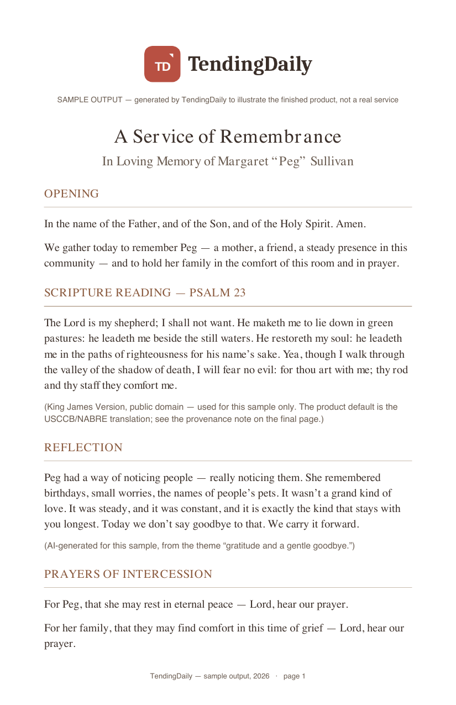

Not the writing. The responsibility.
By 10:15 you've got eleven tabs open.
A prayer from a parish you've never heard of, half-right. A verse you think fits, but you're not sure. You copy, paste, trim, second-guess the trim. It works, technically. But it feels borrowed, not made.
It's not that you don't care. You care a lot, which is exactly why this feels so heavy. Here's what's actually riding on it: not just your Sunday, but whether the room feels like someone thought about them, or like something got stitched together at midnight and it shows. You know the difference when you're the one sitting in the pew.
Liturgy takes time, thought, effort. Not always. Not here.
The app doesn't ask you to be eloquent. It asks you to care about the people in the room, and gives that care somewhere to go.
Close the laptop by 10:30, not midnight. For the RE teacher, the volunteer, the parishioner: different rooms, different timelines, same job, and now not all on your own.

Short is better.
Fifteen minutes, max, often less. You choose the vessel.
Booklet
The intimate room
The memorial. Something to hold. Something to keep.
“This is for you.”
Slide deck
The assembly hall
The parish gathering. Shared together. Seen by everyone.
“This is for us.”
One build. Two outputs. Toggle at the end.
You choose the moment. You stay in control.
You were asked because you care. The blank screen isn't the problem. Not knowing you're allowed to shape the moment is.
The app gives you a starting point (scripture, structure, suggestions) and you review and shape it into something that's actually yours: a booklet people keep, or slides people share.
Might be asked, yourself
Try it free, the day it happens.
Sign in with a magic link. No password, no access code needed. Three builds a month included.
Leading a parish or school
One license. Unlimited builds, no per-person accounts.
No one pays in the moment they need this most.
Walk in Sunday knowing it's actually yours.
Early days: TendingDaily is a real, working app in active pilot, not a finished product with every rough edge sanded off yet. If something's off, that's useful to know, not a surprise. Scripture text can't be edited, to keep it accurate. Anything you upload is deleted within 24 hours.